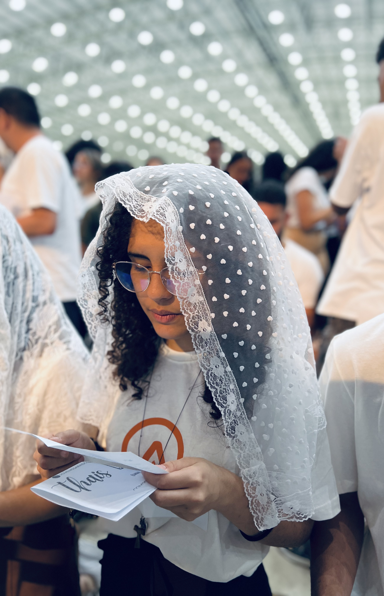

Essa parte do site existe por causa de uma pessoa que esteve presente desde o começo da ideia desse projeto.Foi uma das primeiras a ouvir, conversar, apoiar e incentivar tudo isso acontecer. Então achei justo deixar esse pequeno easter egg perdido por aqui 💙
Algumas pessoas ajudam projetos acontecerem sem nem perceber.